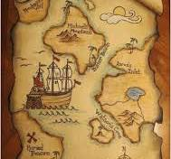
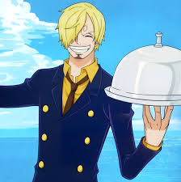
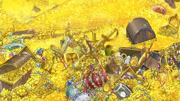
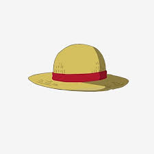
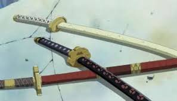
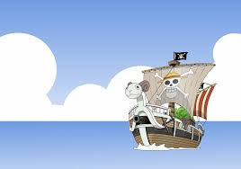
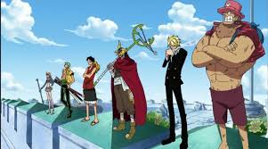

🗺️ Navegue pelo desconhecido!
Este é um exemplo de site com tema pirata, inspirado em One Piece. Embarque nessa aventura!
Nossa Tripulação

Capitão
Líder destemido que comanda o navio

Navegador
Especialista em cartas náuticas e rotas secretas

Cozinheiro
Prepara banquetes para manter a tripulação feliz
Tesouros Encontrados

Baú de moedas de ouro

Coroa do Rei Pirata

Mapa do Tesouro

Espadas lendária
Galeria Pirata



"O tesouro não é o objetivo real. A verdadeira recompensa são os amigos que fazemos ao longo da jornada!"